Lando Norris
"The Milkman"
McLaren | #1
Andrea Stella
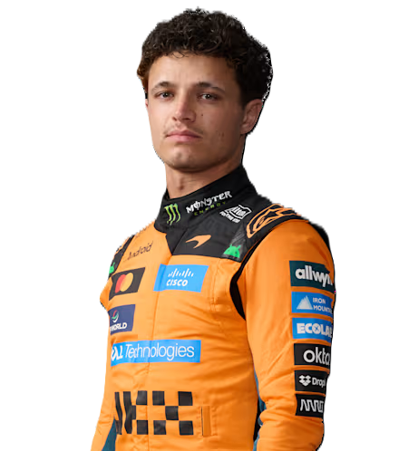
"The Milkman"
McLaren | #1
Andrea Stella
Lando is the reigning 2025 World Champion. For the 2026 season, he chose to swap his usual #4 for the champion's #1.
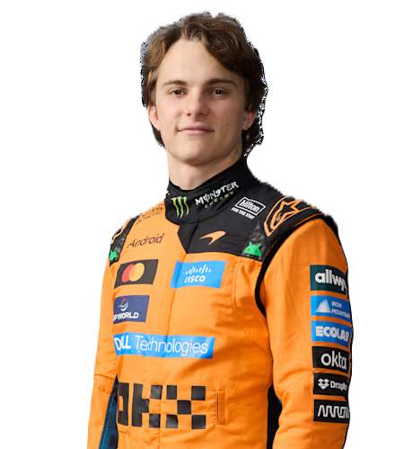
"The Ice Man 2.0"
McLaren | #81
Andrea Stella
Oscar is the first driver in history to win the Formula Renaissance, F3, and F2 championships in three consecutive years.
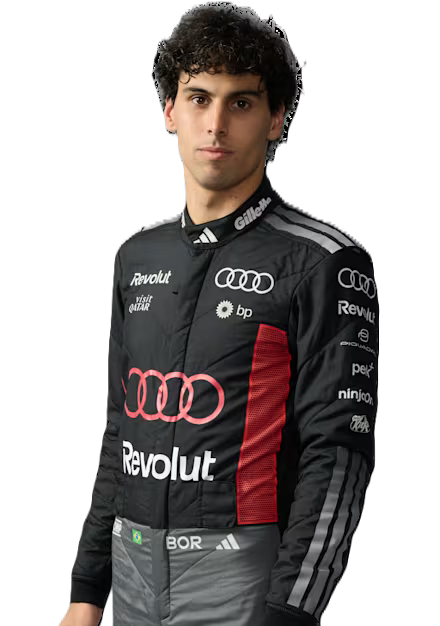
"Gabi"
Audi | #5
Jonathan Wheatley
Gabriel is a back-to-back rookie champion, winning the F3 and F2 titles in his very first seasons!
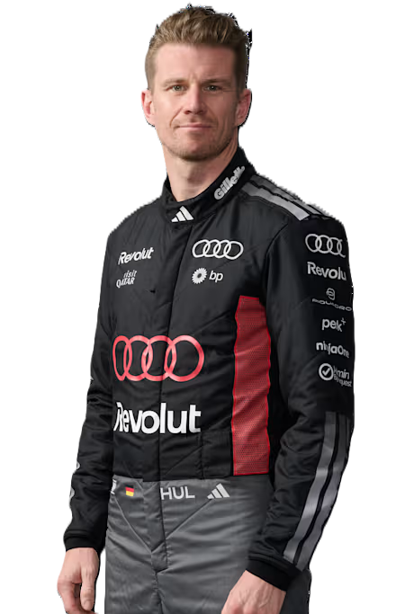
"The Silver Fox"
Audi | #27
Jonathan Wheatley
Nico holds the record for the most F1 starts without a podium, but he is widely considered one of the best technical drivers on the grid.
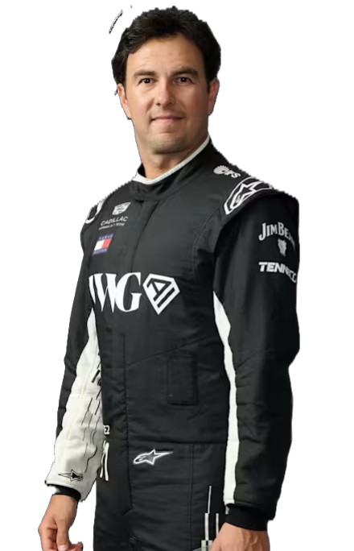
"The Minister of Defense"
Cadillac | #11
Graeme Lowdon
Checo is the most successful Mexican driver in history. He is known as the "King of the Streets" for his incredible wins on city circuits.
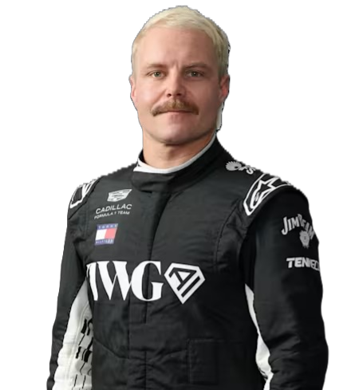
"VB"
Cadillac | #77
Graeme Lowdon
Outside of F1, Valtteri is a professional-level gravel cyclist and often races in international cycling competitions.
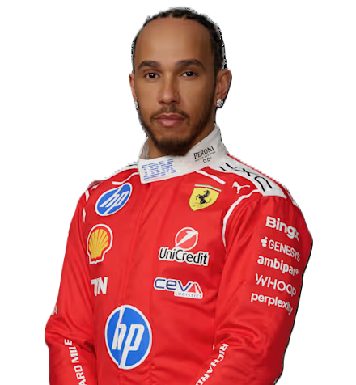
"Sir Lewis"
Ferrari | #44
Frédéric Vasseur
This is Lewis's second year at Ferrari. He joined the team to chase a record-breaking 8th World Title.
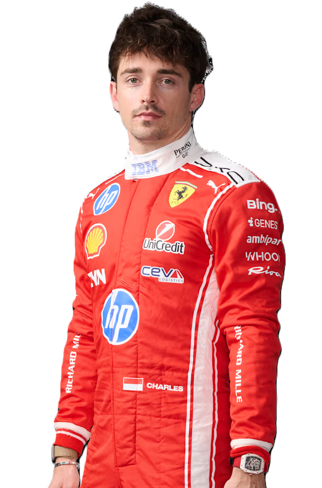
"Lord Percival"
Ferrari | #16
Frédéric Vasseur
Charles is a talented pianist and has released several original music tracks on streaming platforms.
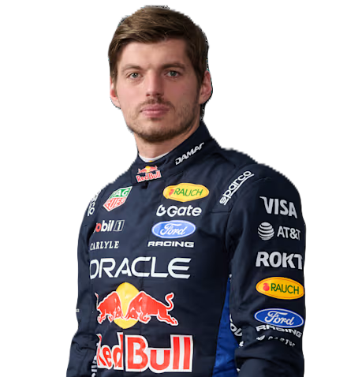
"Super Max"
Red Bull | #3
Laurent Mekies
After losing the title in 2025, Max stopped using the #1 and switched to #3, the same number his friend Daniel Ricciardo used to race.
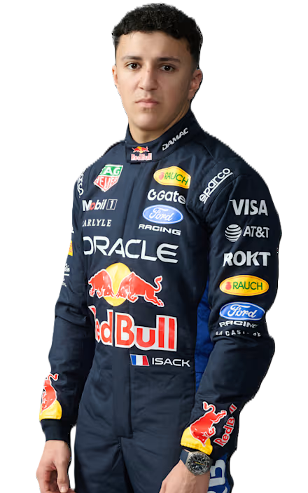
"The Little General"
Red Bull | #6
Laurent Mekies
Hadjar is a graduate of the Red Bull Junior Team and earned his seat after a stunning debut podium at Zandvoort.
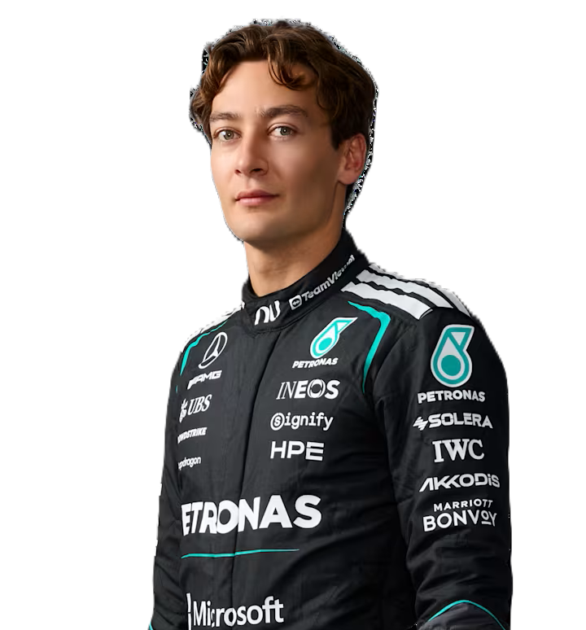
"Mr. Consistency"
Mercedes | #63
Toto Wolff
George is now the senior leader at Mercedes following Lewis Hamilton's departure to Ferrari.
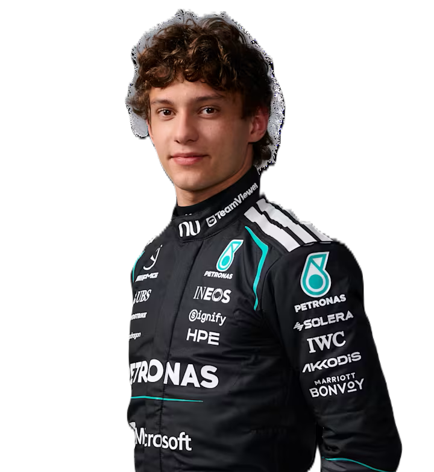
"Kimi"
Mercedes | #12
Toto Wolff
At just 19 years old, Kimi is the youngest driver to ever race for a top-tier Mercedes factory team.
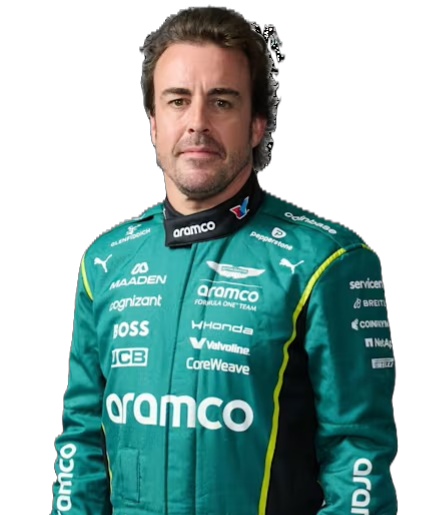
"El Nano"
Aston Martin | #14
Adrian Newey (Managing Technical Partner) / Mike Krack
Fernando is now over 44 years old, making him one of the oldest and most respected drivers in F1 history.
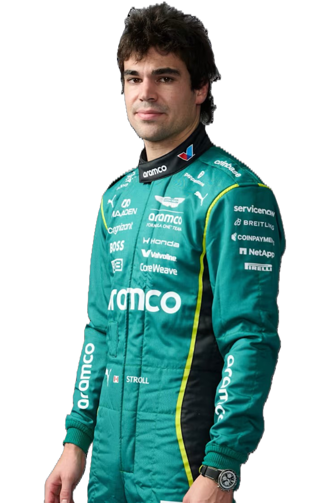
"Stroll"
Aston Martin | #18
Adrian Newey (Managing Technical Partner) / Mike Krack
Lance has now competed in over 150 Grands Prix, making him a veteran of the midfield battles.
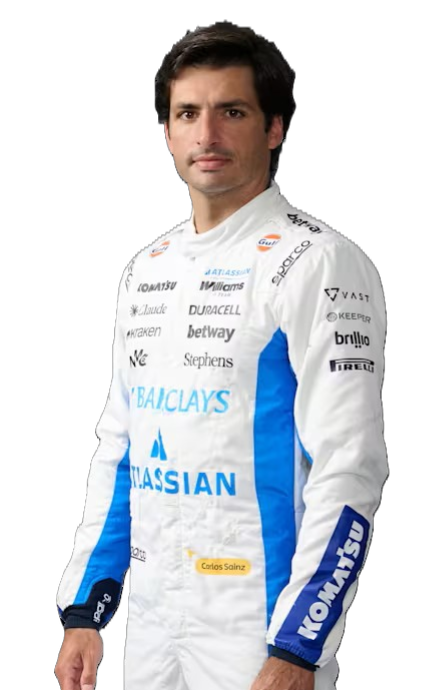
"Smooth Operator"
Atlassian Williams | #55
James Vowles
Carlos is the only driver to have won races for three different teams (McLaren, Ferrari, Williams) in the last five years.
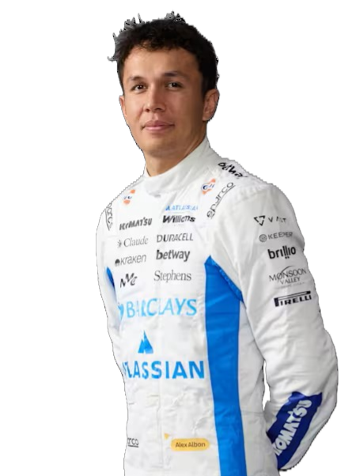
"Albono"
Atlassian Williams | #23
James Vowles
Alex is famous for his "pet menagerie"—he has over 10 pets at home, including several cats and dogs!
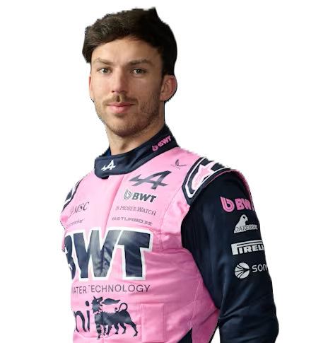
"Full Gas"
BWT Alpine | #10
Oliver Oakes
Pierre is the leader of the "French Revolution" at Alpine, though the team now uses Mercedes engines.
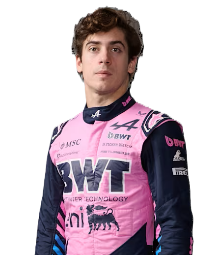
"Fran"
BWT Alpine | #43
Oliver Oakes
Franco is the first Argentinian driver in decades to secure a long-term, multi-year contract in F1.
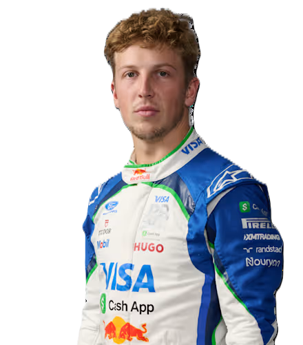
"Liam"
Racing Bulls | #30
Alan Permane
Liam spent nearly two years as a reserve before finally getting his full-time seat and proving his worth with consistent points.
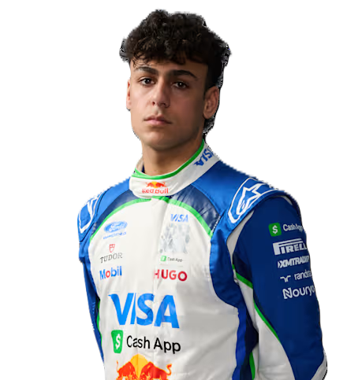
"Arvid"
Racing Bulls | #41
Alan Permane
Arvid is a Red Bull prodigy who skipped several junior steps because his raw pace was too fast to ignore.
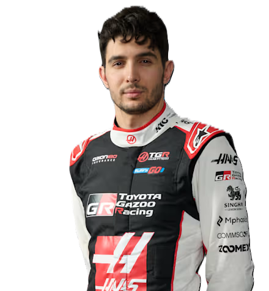
"Estie Bestie"
TGR Haas | #31
Ayao Komatsu
Esteban joined Haas to lead their new technical partnership with Toyota Gazoo Racing (TGR).
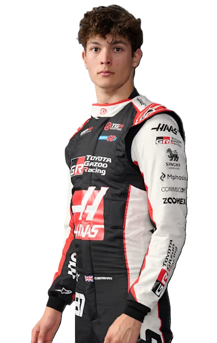
"Ollie"
TGR Haas | #87
Ayao Komatsu
Ollie became a legend overnight when he subbed for Ferrari at age 18 and scored points on debut.